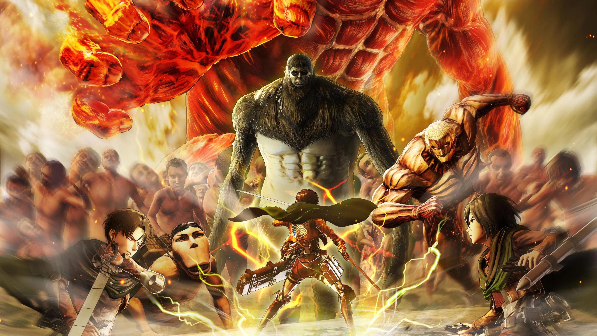

Dunia dalam Bahaya
Attack on Titan adalah seri manga dan anime yang populer yang berlangsung di dunia di mana manusia hidup dalam ketakutan di balik dinding-dinding raksasa untuk melindungi diri dari makhluk raksasa berwujud manusia yang dikenal sebagai Titan, yang memangsa manusia tanpa ampun.
Seri ini mengikuti Eren Yeager, saudara perempuannya yang diadopsi Mikasa Ackerman, dan temannya Armin Arlert, saat mereka bergabung dengan militer untuk melawan Titan dan mengungkap rahasia di balik keberadaan mereka. Sepanjang perjalanan, mereka bertemu dengan berbagai jenis Titan, masing-masing dengan kemampuan dan karakteristik uniknya sendiri, serta faksi-faksi dalam militer dengan ideologi dan motif yang berbeda.
Cerita
Cerita Attack on Titan berlangsung di dunia di mana manusia terpaksa hidup di balik dinding raksasa untuk melindungi diri dari Titan, yang berkeliaran di luar dinding dan menyerang tanpa peringatan. Seri ini dimulai dengan munculnya tiba-tiba Titan Kolosal, yang menghancurkan sebagian dinding luar dan memungkinkan sekelompok Titan yang lebih kecil masuk ke dalam kota.
Eren Yeager, saudara perempuannya yang diadopsi Mikasa Ackerman, dan temannya Armin Arlert menyaksikan kekacauan dan kehancuran yang disebabkan oleh Titan, dan Eren bersumpah untuk membalas dendam dan melindungi umat manusia dari Titan. Ketiganya bergabung dengan militer, dan dilatih untuk melawan Titan menggunakan peralatan manuver vertikal, yang memungkinkan mereka bergerak dengan cepat dan efisien di ruang tiga dimensi.
Saat mereka berkembang melalui pelatihan dan misi mereka, mereka mengungkap rahasia tentang Titan, dinding, dan militer, dan harus menavigasi ketegangan politik dan sosial saat mereka berusaha melindungi umat manusia dari Titan. Seri ini mengeksplorasi tema-tema survival, pengorbanan, dan kondisi manusia, dan telah mendapatkan pengikut yang besar karena aksi yang intens dan alur cerita yang rumit.
Karakter-karakter
Eren Yeager
Protagonis dari seri ini, Eren adalah seorang pemuda yang bertekad dan ambisius yang bergabung dengan militer setelah menyaksikan ibunya dimakan oleh Titan. Dia memiliki rasa keadilan yang kuat dan keinginan untuk melindungi umat manusia dari Titan.
Mikasa Ackerman
Saudara perempuan yang diadopsi oleh Eren, Mikasa adalah seorang pejuang terampil dengan sikap yang tenang dan terkumpul. Dia sangat melindungi Eren dan akan melakukan segalanya untuk menjaganya tetap aman.
Armin Arlert
Teman terbaik Eren, Armin adalah seorang jenius taktis dengan kecerdasan yang tajam. Dia sering menciptakan strategi untuk membantu kelompok dalam pertempuran mereka melawan Titan.
Levi Ackerman
Dikenal sebagai prajurit terkuat umat manusia, Levi adalah seorang pejuang yang sangat terampil dan tegas yang ditakuti dan dihormati oleh rekan-rekannya dan musuh-musuhnya.